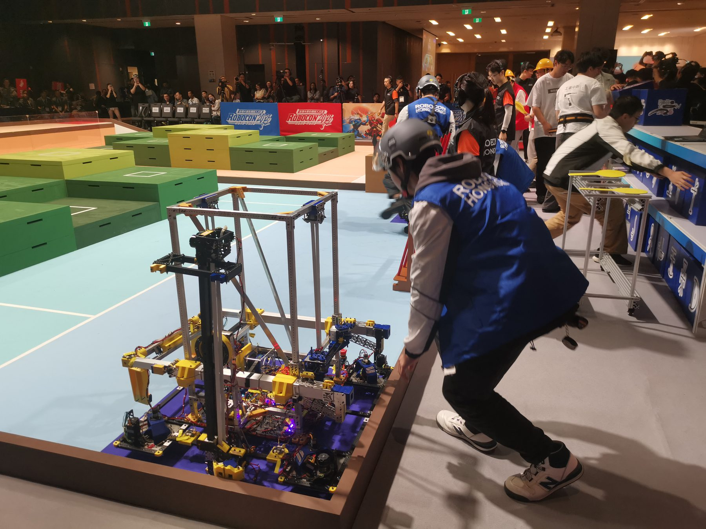
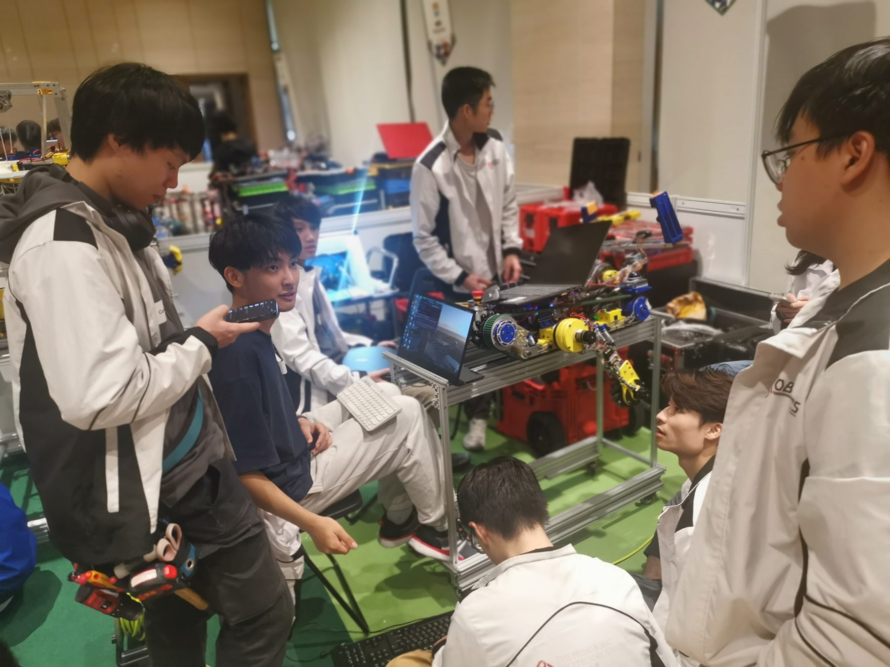
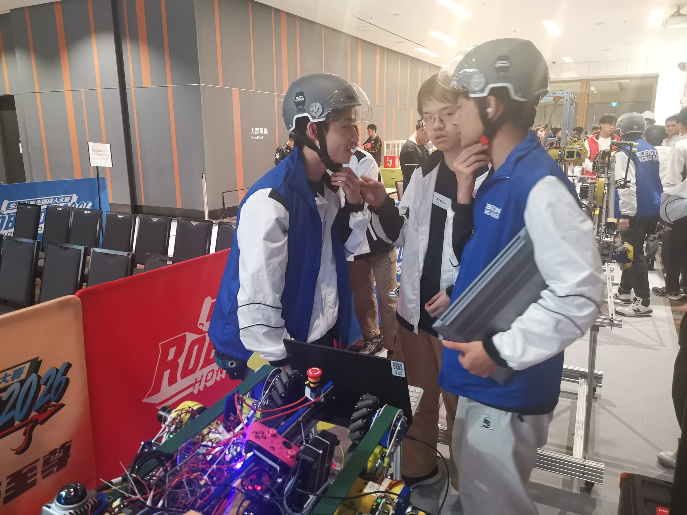
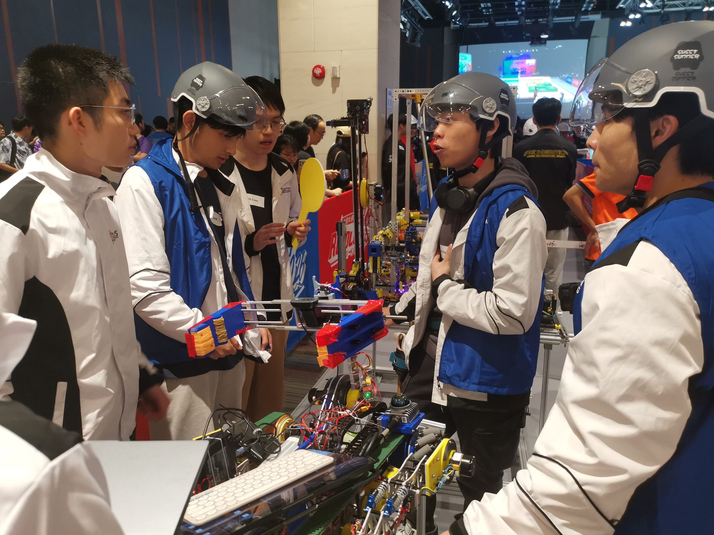
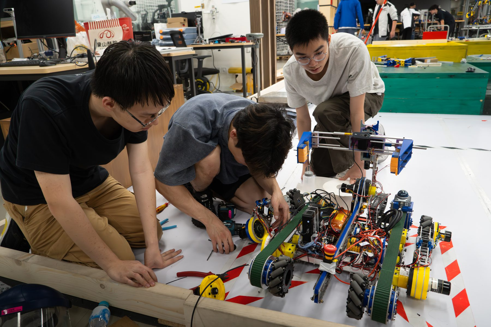

Two PolyU teams compete at the Robocon 2026 Hong Kong Contest
PolyU entered two teams, PolyBotics and Redbricks, in the Robocon 2026 Hong Kong Contest, where 15 teams from 9 local universities and institutions competed on the “Kung Fu Quest” theme. Each team built a manual Robot 1 and an autonomous Robot 2 for weapon assembly, Kung Fu Scroll handling in the Meihua Forest and a tic-tac-toe finish.
Neither team won an award this year. The design, build and integration work, and the lessons on reliability and rule compliance, are the starting point for the Robocon 2027 project.
Watch the full Robocon 2026 Hong Kong Contest broadcast (HKSTP)





